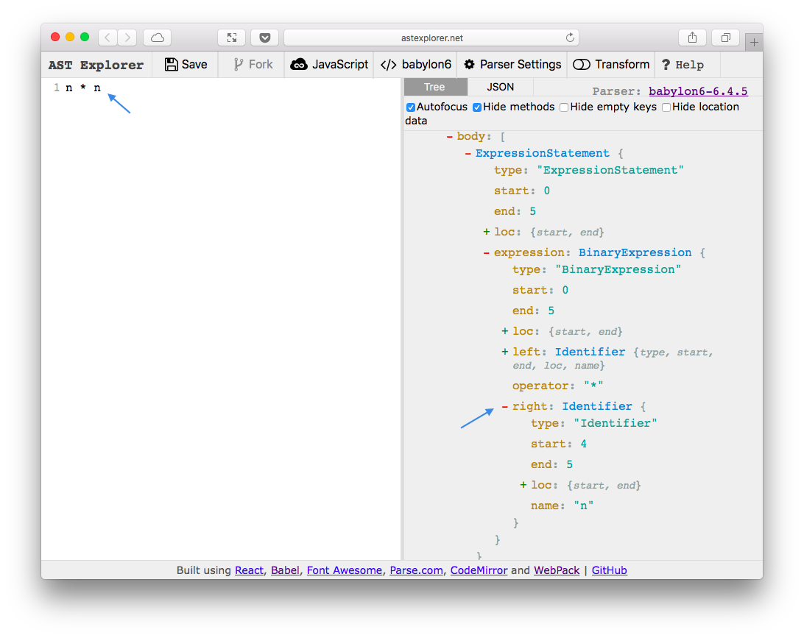

JavaScript
Парсинг
Трансформация
Генерация
JavaScript
Лексический анализ
Синтаксический анализ
[
{ type: { ... }, value: "n", start: 0, ... },
{ type: { ... }, value: "*", start: 2, ... },
{ type: { ... }, value: "n", start: 4, ... },
]
Лексический анализ
Синтаксический анализ
- BinaryExpression
- operator: *
- left
- Identifier
- name: n
- right
- Identifier
- name: n
AST Explorer
Трансформация
n ** 2n * n
BinaryExpression(path) {
if (path.node.operator === '**') {
path.replaceWith(t.binaryExpression(
'*', path.node.left, path.node.left
))
}
}
AST
String
import { chunk } from "lodash"
app.get("/users", async (req, res) => {
const { users } = await db.getData()
res.render("users", { users })
})
const Button = ({ children }) => {
return <button>{ children }</button>
}
React.createElement(
"button", null, children
)
type RequestParams<T> = {
url: string,
method?: "GET",
json?: boolean,
headers?: {
[name: string]: string
},
process?: (
req: Request,
resolve: (body: T) => void,
reject: (err: T) => void
) => void;
};
<div className={styles.button + styles['size-m']} /><div className={styles['size-M']} />
Хочется
<div styleName='button size-m' />Получим
<div class='undefined'></div>Хочется Err: class .size-M not found in your css file.
export default function ({ types: t, template }) {
return {
visitor: {
JSXAttribute(path) {
if (path.node.name.name !== 'styleName') return
path.node.name.name = 'className'
const classes = path.node.value.value
path.node.value = t.jSXExpressionContainer(
template(classes.split(' ')
.map(className => `styles['${className}']`)
.join(' + '))().expression
)
}
}
}
}
module.exports = context => {
return {
Identifier(node) {
if (node.name.length < 3) {
context.report(
{ type: 'id-length', loc: node.loc },
'Identifier should have more then 3 symbols'
)
}
},
}
}
import _ from 'lodash'
_.map([1, 2, 3], x => x * x)
import _map from 'lodash/collection/map'
_map([1, 2, 3], x => x * x)